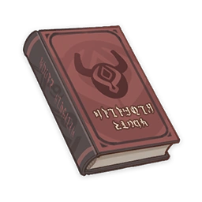

Mondstadt · Books & Literature
Hilichurl Cultural Customs
Jacob Musk’s four-volume study describes hilichurl social roles, spiritual customs, Lawa loners, and three Dadaupa Gorge tribes. His field notes mix observations with broad, sometimes speculative judgments, so they are one scholar’s account rather than a universal description.

A four-volume study by Jacob Musk
Hilichurl Cultural Customs is credited to Jacob Musk, a Mondstadt ecologist described in the collection as the ‘Poet Laureate of Hilichurlian.’ The four volumes study social roles, spiritual customs, powerful solitary hilichurls called Lawa, and the different traditions of three tribes in Dadaupa Gorge.
Volumes I, II, and IV are in the Knights of Favonius Library; Volume III is in Jean’s office. The set is a rare in-world account of hilichurl life, but it is still Jacob’s account, shaped by his access, assumptions, and era.
Social roles in Volume I
Jacob describes smaller tribes as extended families and identifies shamans as influential elders who manage major affairs, protect the group with elemental abilities, and lead worship. He also notes that some tribes instead follow a physically stronger chief, and suggests that local conditions can affect how much status combat ability brings.
On resource sharing, he admits that hostility and language barriers make direct research difficult, then cites Knights of Favonius patrol reports suggesting that resources are shared according to need. That is evidence about the limits of his fieldwork as well as a claim about tribal life.
Spiritual practices and ruins in Volume II
The second volume says hilichurls revere elemental power rather than a specific god. It describes mask designs and body paint as signs of elemental affiliation, shamans organizing ceremonies, and raw meat being offered at altars. Jacob’s account presents elemental beliefs as able to differ within a single tribe.
He also claims hilichurls have no concept of past or future and says their markings merely imitate ancient ruins. The same volume calls their preference for ruins inexplicable and admits the reason remains unknown. These broad claims are Jacob’s conclusions, not explanations provided by hilichurls themselves.
The Lawa are not tribal rulers
Volume III describes unusually large hilichurls with great strength and the ability to use elemental power to strengthen or protect their bodies. Other hilichurls address them as ‘Lawa,’ which Jacob glosses as a respectful word for a king or chief.
The chapter immediately qualifies that title: these Lawa do not rule the tribe. Jacob describes them as loners who prefer solitude and avoid the attention of smaller hilichurls. The volume therefore cautions against reading a respectful title as proof of political leadership.
Three Dadaupa Gorge tribes in Volume IV
Jacob’s local comparison describes the Meaty Tribe around shared food and combat, including a communal boar stew and an arena where combatants risk being mocked if they are defeated. The Sleeper Tribe builds simple huts for rest; the book’s claim that good sleep explains its intelligence is Jacob’s speculation, not a demonstrated cause.
The Eclipse Tribe is described as oriented toward occult power and a symbol resembling an eclipsed sun. Jacob says its shamans are especially powerful and that a throne at the settlement’s center marks the leader. These are three particular Dadaupa communities in his study, not a template for all hilichurl tribes.
Later quests change the historical context
In ‘Requiem of the Echoing Depths’ and ‘Caribert,’ the story connects hilichurl transformation to the Curse of the Wilderness and Khaenri’ah. That later context matters when reading Volume II’s unresolved question about hilichurls’ relationship to the ruins they inhabit, as well as its sweeping statements about memory and the past.
These quests add a history that Jacob’s book does not know. They do not turn every observation in his study into a complete explanation of hilichurls, and the book itself does not identify the curse or name Khaenri’ah.
Read the book as field notes, not a final verdict
Jacob’s writing combines reported encounters, patrol reports, and deductions. The text itself acknowledges that language barriers obstruct his research, yet it also uses dismissive descriptions such as ‘primitive’ and repeatedly speculates about hilichurl intelligence and beliefs.
The collection is valuable for what it records and for how a Mondstadt scholar interprets hilichurl communities. Keep those layers separate: a custom Jacob reports, an explanation he infers, and a later quest fact are different kinds of evidence.
This is an original CoreGG reading guide, not an official HoYoverse article or a reproduction of the game text. Source links below identify the records used so you can check the original context.
Sources & references
Check these sources for the original game text and reference trail.